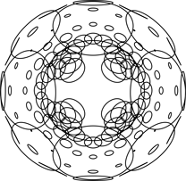
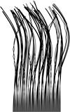
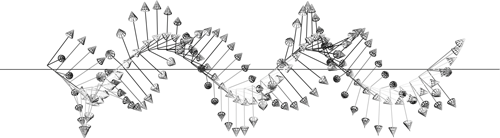

Developer: Pablo Colapinto
gmail: wolftype
Homepage (versor.mat.ucsb.edu)
Download and Installation Instructions
Reference Guide to the Elements
Join the Mailing List (for update notifications, to ask questions, discuss bugs, etc)
Read my Master’s Thesis on the Subject
Look at the AlloSphere Research Group
As long as algebra and geometry have been separated, their progress have been slow and their uses limited; but when these two sciences have been united, they have lent each mutual forces, and have marched together towards perfection.
-Joseph Louis Lagrange
No attention should be paid to the fact that algebra and geometry are different in appearance.
-Omar Khayyám
L’algèbre n’est qu’une géométrie écrite; la géométrie n’est qu’une algèbre figurée.
-Sophie Germain
If you want to see, learn how to act
-Heinz von Foerster
This package provides operations and draw routines for conformal geometric algebra, a relatively new spatial computing model used by physicists, engineers, and artists. Versor is designed to make graphical experimentation of conformal geometric algebra within a C++ environment easier. You can use this library to draw geometrical things, explore spherical and hyperbolic spaces, transformations, design robots, etc. I am using it for my PhD on bio-inspired engineering.
I first developed Versor while reading “Geometric Algebra for Computer Science” by Leo Dorst, Daniel Fontijne, and Stephen Mann. It’s a fantastic book and if you’re reading this you should also consider reading that.
Built to aid in my modelling of organic forms, the initial development was funded in large part by the Olivia Long Converse Fellowship for Botanic research, courtesy of the Graduate Division at the University of California in Santa Barbara. So this software is under a UC Regents General Public License.
See also the links below for more information, including some videos. The Doc folder has a doxygen which I periodically tidy up. Lots of test files too.
A full-fledged tutorial is in the works … but a basic intro follows
One quick word: clifford algebras and the spatial relationships they embody can often feel abstract and daunting. But it’s a twisty, boosty ride, full of weird discoveries. You’re bound to make some, so have fun!
The homogenous 5D CGA model used here was initially proposed by David Hestenes, Hongbo Li, and Alan Rockwood in 2001, and given full form and weight through the excellent and careful work of Leo Dorst, Joan and Anthony Lasenby, and Eduardo Bayro-Corrochano, and others. These researchers’ writings have helped me quite a bit. CGA is particular breed of Clifford Algebras (also known as Geometric Algebras), which operate upon combinatoric hypercomplex vector spaces that emerged from William Clifford’s attempt to fuse Hamilton’s quaternions with Grassmans’ extension algebras. Thus transformations were married with a system of abstraction. For more information, take a look at the links to the sites at the bottom of this page. For instance, for practical applications in robotics and “Geometric Cybernetics”, see Eduardo Bayro-Corrochano’s work. For some very helpful algorithms in rigid body dynamics and gravitational physics see the variety of publications by Joan and Anthony Lasenby. To get at the beginning of it all, read David Hestenes’ New Foundations for Classical Mechanics.
This software is licensed under a general UC Regents General Public License. If you’re planning on using CGA inside a sellable product you should be aware that there is a vague patent on the use of 5D CGA which may limit its commercial use when encoding robotic control mechanisms, or may just limit your ability to patent the model itself. I hope and imagine it is the latter. Though powerful, elegant, and brilliant, the heart of CGA is just a quadratic equation and the arguments for the use of 5D CGA are that it is foundational and universal, the very two characteristics of a system which would make it un-patentable. The Clifford Algebras on which it is based are from the 19th century.
Typical matrix operation libraries have templated inlined functions for Vector and Matrix multiplication. Versor is similar, but on steroids, where vectors and sparse matrices of various sizes are all just called multivectors and represent geometric elements beyond just xyz directions and transformation matrices. Circles, lines, spheres, planes, points are all algebraic elements, as are operators that spin, twist, dilate, and bend those variables. Both these elements and operators are multivectors which multiply together in many many many different ways.
The backbone of Versor’s library is a precomputation table of the most likely (though not all) multiplications you could possibly hope to use.
It is a highly templatized and inlined extravaganza of function calls. Of course, there are also many useful algorithms included for manipulating geometric elements.
Most of these useful algorithms are located in thevsr_op.h file.
A Circle, for instance, can be outer-multiplied by a Plane to get the Point Pair where they intersect.
The current version of Versor is built for operational speed, with the expense of slightly longer compile times.
The makefile builds the STATIC version of this library, which currently gives up a bit of abstraction
(no inherited generic Multivector class) in exchange for a 5x speed boost (and 10x decrease in file size).
Future versions will likely use jit compilation to take care of this (i.e. combine speed with lightweight implementation), by hooking into
luajit for instance. I am working on that with Graham Wakefield and his thoughtful guidance and tutelage. Additionally, there is a trade off I am working on where you have an MVBase class with which you can make arbitrary functions. This requires a bunch of pointer being copied and has led to code bloat. GA is a tricky world of unknown return types.
The C++11 standards should help (for instance, “auto” return types), but are not implemented here.
GA combines many other maths (matrix, tensor, vector, and lie algebras). It is holistic. CGA uses a particular mapping (a conformal one) of 3D Euclidean space to a 4D sphere. Operations on that hypersphere are then projected back down to 3D. That how it works in a nutshell.
A fuller treatment of this question (er, the question of why we do this) can be found in my Master’s thesis on the subject. But basically, Geometic Algebra offers a particular richness of spatial expression. Imagine needing glasses and not knowing you needed glasses. Then, when you do get glasses, the world changes unexpectedly. GA is like glasses for the inside of your brain. Conformal Geometric Algebra, especially the 5D variety enlisted here, are like x-ray glasses. One point of clarification that occurs are disambiguations of previously collapsed concepts.
For instance, the main disambiguation, is that between a Point in space and a Vector in space.
A Point has no magnitude, but a Vector does. A Point has no direction, but a Vector does. Points are null Vectors. We can make them
by writing
Vec( 1,0,0 ).null();
More on that last point later … there are various binary operators defined (mainly three). We can introduce one right now, which is the dot or inner product.
In mathematics, the inner product of two points pa and pb is written \(p_{a} \rfloor p_{b}\). In Versor we use the <= operator:
Point pa = Vec(1,0,0).null();
Point pb = Vec(-1,0,0).null();
Scalar squaredDist = ( pa <= pb ) * -2;
which in this case would return a Scalar value of 4. The -2 is there since the inner product really returns half the negative squared distance.
We can extract the Scalar into a c++ double like so:
double squaredDist = ( pa <= pb )[0] * -2;
Points thought of as Spheres (really, Dual Spheres, more on Duality later): they are Spheres of zero radius. As such they are a type of Round element. We can also build points this way:
Round::null( 1,0,0 );
or you can pass in another element
Round::null( Vec(1,0,0) );
or use the built-in method
Point pa = Vec(1,0,0).null();
Points can also be made with the macro PT
Point pa = PT(1,0,0);
which is just “syntactic sugar” for Vec(1,0,0).null()
Speaking of Spheres, we can also make spheres with a radius this way:
DualSphere dls = Round::dls( Vec( 1,0,0 ).null(), 1 );
or
DualSphere dls = Round::dls( Vec( 1,0,0 ), 1 );
or
DualSphere dls = Round::dls( 1,0,0,1 )
all of which give a dual sphere of radius 1 at coordinate 1,0,0;
Versor is named after the one of the basic category of elements of geometric algebra.
A versor is a type of multivector which can be used to compose geometric transformations,
namely reflections, translations, rotations, twists, dilations, and transversions (special conformal transformations).
More on all of those transformations later.
In Versor, a Vector (or Vec) is a typical Euclidean 3D element. It can be built in the normal way:
Vec v(1,2,3);
Some built-in Vectors exist:
Vec::x x; //<-- X Direction Unit Vector Vec(1,0,0)
Vec::y y; //<-- Y Direction Unit Vector Vec(0,1,0)
Vec::z z; //<-- Z Direction Unit Vector Vec(0,0,1)
A Vector can be spun around using a Rotor, which is exactly like a quaternion. However, whereas quaternions are often built by specifying an axis
and an angle, rotors are built by specifying the plane of rotation. Eventually this will make much more sense to you: in general planes are what we
will be using to transform things. For instance, a reflection is a reflection in a plane. As we will see, planes can become hyperplanes which will allow for more extraordinary transformations.
The first completely new element to introduce is the Bivector, which is the plane we will use to generate our Rotor. Bivectors represent directed areas and are dual
to the cross product: the cross product of two vectors in typical vector algebra returns a vector normal to the plane they define. So it is not completely new,
but just sort of new.
Bivectors are also just three elements long, and are built the same way Vectors are.
Biv b(1,2,3);
Some built-in Bivectors exist:
Biv::xy xy; //<-- XY Counterclockwise Unit Area Biv(1,0,0)
Biv::xz xy; //<-- XZ Counterclockwise Unit Area Biv(0,1,0)
Biv::yz xy; //<-- YZ Counterclockwise Unit Area Biv(0,0,1)
While it is perfectly valid to write Vector, Bivector and Rotor, you’ll notice I’ve truncated them to their three letter nicknames, Vec and Rot.
That’s up to you: Both long-name and nick-name versions are valid in libvsr (they are typedef’ed to each other).
Biv b = Biv::xy;
double theta = PIOVERTWO;
Vec v1 = Vec::x.rot( b * theta )
You can also generate rotors using Gen::rot( <some bivector> ) In fact, all transformations can be generated this way, and then later applied to arbitrary elements.
For instance, Motors can be generated which translate and rotate an element at the same time. This is also called a twist.
Motor m = Gen::mot(<some dual line>); //<-- Makes A Twisting Motor around Some Dual Line
Point p = Vec(0,0,0).null().sp(m); //<-- Applies above motor to a Point
You’ll notice there are dual versions of elements: as in a DualLine (or Dll for short). That’s because in the real world of abstract geometry, there are usually
two ways of defining an element. For instance, we can build a direct Line on the Y-axis by wedging two points together, along with infinity:
Line lin = Vec(0,0,0).null() ^ Vec(0,1,0).null() ^ Inf(1);
Or we can define a line by the bivector plane that it is normal to, and a support vector that determines how far away the line is from the origin. To convert the above line into its dual representation, we just call the dual() method:
Dll dll = lin.dual();
For those who are interested, this dual representation is isomorphic to the Plücker coordinates, which are used in screw theory to twist things around. Here, too, we can use dual lines to generate transformations which twist things around them.
vsr_op.h contains the bulk of the functions for generating elements from other elements. Some guidelines:
Generate:: or Gen:: methods generate or otherwise operate on versorsRound:: or Ro:: methods create or otherwise operate on Round elements (Points, Point Pairs, Circles, Spheres)Flat:: or Fl:: methods create or otherwise operate on Flat elements (Lines, Dual Lines, Planes, Dual Planes, or Flat Points)You notice I’ve been throwing around the null() method a lot,
Rotor Gen::rot( const Biv& b ); //<-- Generate a Rotor from a Bivector
Translator Gen::trs( const Drv& v); //<-- Generate a Translator from a Direction Vector
Motor Gen::mot( const Dll& d); //<-- Generate a Motor from a Dual Line
Dilator Gen::dil( const Pnt& p, double amt ); //<-- Generate a Dilator from a Point and an amount
Transversor Gen::trv( cont Tnv& v); //<-- Generate a Transveror from a Tangent Vector
Booster Gen::bst( const Par& p); //<-- Generate a Booster from a Point Pair
The TestExamples include bindings to the GLV framework for windowing and user interface controls. A GLVApp class and GLVInterface class provide the necessary glue.
The interface has a built in gui, mouse info, and keyboard info stored.
static Circle circle;
interface.touch(circle);
DRAW(circle);
Putting the above code inside your application’s onDraw() loop will enable you to click and modify geometric elements by hitting the “G”, “R” and “S” keys. Hit “Q” to deselect all elements.
| Key | Response |
|---|---|
~ |
Toggle full screen. |
SHIFT + Arrow Keys |
navigates the camera in x and z directions. |
SHIFT+CONTROL+Arrow Keys |
navigates the camera in Y direction |
OPTION +Arrow Keys |
spins the model view around. |
G |
Grab an Element |
R |
Rotate an Element |
S |
Scale an Element |
V |
Print out still (to postscript) |
The elements of the algebra are geometric entities (circles, planes, spheres, etc) and operators (rotations, translations, twists, etc) which act on the elements of the algebra. All are known as multivectors since they are more than just your typical vectors.
Multivector elements are most often combined using three overloaded binary operators:
The Geometric Product of elements A and B:
A * B
multiplies two multivector elements together. This is most useful when multiplying one by the inverse of another (see ! operator, below).
The Outer Product of elements A and B:
A ^ B
“wedges” two multivectors together. Its from Grassman’s algebra of extensions, and can be thought of as a way of creating higher dimensions from smaller ones.
For instance, wedging two Vectors (directed magnitudes) together returns a Bivector (a directed Area). Wedging two Points together returns a PointPair.
Wedging three Points together returns a Circle.
The Inner Product of elements A and B:
A<=B
There is also a Commutator product (differential)
A%B
And a few overloaded operations, including,
The Inverse:
!A
returns \(A^{-1}\)
The Reverse:
~A
returns \(\tilde{A}\)
And finally, since I ran out of overloadable operators, some basic methods
A.conjugation()
which returns \(\bar{A}\)
A.involution()
which returns \(\hat{A}\)
In summary:
| Versor | Math | Description | |
|---|---|---|---|
A * B |
\(AB\) | Multiplies two elements together (and, in the case of A * !B finds ratios between elements). | |
A ^ B |
\(A \wedge B\) | Wedges two elements together (builds up higher dimensional elements). | |
A <= B |
\(A \rfloor B\) or \(\boldsymbol{a} \cdot B\) | Contracts A out of B (returns the part of B “least like A”, sort of). | |
A % B |
\(A \times B\) | Commutator, equal to \(\frac{1}{2}(AB-BA)\) | |
!A |
\(A^{-1}\) | The Inverse of A. | |
~A |
\(\tilde{A}\) | The Reverse of A. | |
A.conjugation() |
\(\bar{A}\) | Conjugation. | |
A.involution() |
\(\hat{A}\) | Involution. |
To make the process of writing code faster, all elements of the algebra are represented by types 3 letters long. Alternatively, you can also use the long-form name.
| Type | ||
|---|---|---|
| Euclidean | ||
Sca |
Scalar |
A real number |
Vec |
Vector |
A Directed Magnitude, or 3D Vector, typical cartesian stuff |
Biv |
Bivector |
A Directed Area. Use them to make Rotors: Gen::Rot( Biv b ) |
Tri |
Trivector |
A Directed Volume Element |
| Round | ||
Pnt |
Point |
A Null Vector: Pnt a = Vec(1,0,0).null() |
Par |
PointPair |
A 0-Sphere (Sphere on a Line): Par par = Pnt a ^ Pnt b |
Cir |
Circle |
A 1-Sphere: Cir cir = Pnt a ^ Pnt b ^ Pnt c |
Sph |
Sphere |
A 2-Sphere: Sph sph = Pnt a ^ Pnt b ^ Pnt c ^ Pnt d |
Dls |
DualSphere |
Typedef’ed as a point: typedef Pnt Dls |
| Flat | ||
Lin |
Line |
A Direct Line: e.g. Lin lin = Par par ^ Inf(1) |
Dll |
DualLine |
A Dual Line: e.g. Dll dll = lin.dual() |
Pln |
Plane |
A Direct Plane: e.g. Pln pln = Cir cir ^ Inf(1) |
Dlp |
DualPlane |
A Dual Plane: e.g. Dlp dlp = |
Flp |
FlatPoint |
|
| Versors | ||
Rot |
Rotor |
Spins an Element (as a Quaternion would) |
Trs |
Translator |
Translates an Element |
Dil |
Dilator |
Dilates an Element |
Mot |
Motor |
Twists an Element along an axis |
Trv |
Transversor |
Bends an Element about the Origin |
Bst |
Booster |
Bends an Element around an “Orbit” |
| Abstract | ||
Mnk |
MinkowskiPlane |
|
Pss |
Pseudoscalar |
|
Inf |
Infinity |
|
There are others as well (for instance, affine planes, lines, and points) but the above are more than sufficient to start with. There are also built in macros, for instance
EP | Sphere At the Origin.
EM | Imaginary Sphere at the Origin.
PT(x,y,z) | A null Point at x,y,z
EP and EM can be invoked instead of Inf to work in non-Euclidean metrics ( Spherical and Hyperbolic, respectively)
Many Euclidean elements can be drawn by invoking Draw::Render(
All elements can be dualized by invoking their dual() method
All elements can be reflected over spinors with the sp(<spinor>) method
All elements can be reflected over versors with the re(<versor>) method
The versors are constructed by the geometric entities, typically by using the Gen:: routines. Operators can also be acted on by operators – you can rotate a translation, or twist a boost.
Most reflections (in a sphere, circle, or point pair, or over a line or plane ) can be calculated by writing
Pnt p = PT(1,0,0);
Pnt r = p.re( CXY(1) ); //Reflection of a point in a circle
r = r / r[3]; //Renormalization of a point
The re() method calculates v.re(C) as C*v.involution()*~C. With a versor C and an element v you might also try C * v * !C. Inversion in a circle or a sphere may change the
weight of the element (for at Point at x, by x^2)
The following tutorial outlines (or will, when it is finished) how to model a simple three joint robotic arm. There is actually already a class Chain which encapsulates much of the functionality below, but
it will serve as a method to introduce the various elements and operators of geometric algebra. Look in examples/robot.cpp for the implementation file.
Frame class and Motor AlgebraVersor includes a class for spatial orientation and navigation (much like a “Navigation” or “Pose” class might in other libraries).
A Frame is constructed by a Point position and Rotor orientation (much like the other libraries’ classes might be instantiated with a Vector position and Quaternion orientation).
Frame myframe( Point(0,0,0,1,0), Rotor(1,0,0,0) );
The above code makes a frame at the origin with default orientation.
Note: instead of Pnt(0,0,0,1,0) you can also use the PAO macro (for “Point-At-Origin”) or make a Point by invoking the null() method of a Vector: Vec(0,0,0).null()
Frames can easily be drawn and manipulated with the mouse. In your GLVApp’s onDraw() method:
static Frame myframe( PAO, Rotor(1,0,0,0) );
DRAW(myframe);
interface.touch(myframe);
The Frame class has many methods for referencing various elements, like the Line (Lin) through the y-axis:
Line yaxis = myframe.ly(); //<-- Returns the line through the yaxis
DRAW3(yaxis,0,1,0); //<-- Draws GREEN Line through y axis
or the xy Plane (‘Pln’):
Plane xyplane = myframe.xy();
A Frame can also be instantiated by a Motor representing it’s absolute position and orientation (combined!).